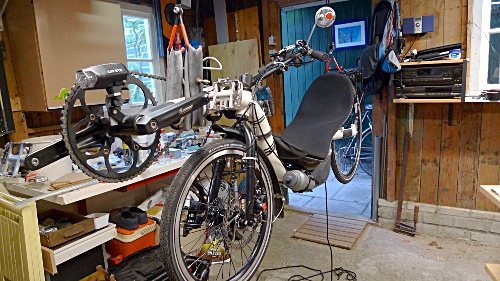

Preparation for my ride to the Eastern edge of the European Continent in September / October. The flight for the way back is booked and preparations on the bike are coming along nicely:
The Raptobike is fitted with new rims and tires, a new chain, new cassette, a disc brake at the front to prevent the rim from excessive wear and new brake pads at the back. Basically, it is a whole new bike, apart from the frame, seat and rack. Waterproof panniers for the rear are on the way, as well as an extra-large bottle cage that will go on the nose-boom and a hydration system so that I can drink while riding 🙂 This machine should now be good enough to get me to the city with the Blue Mosque…